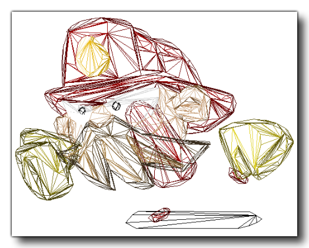
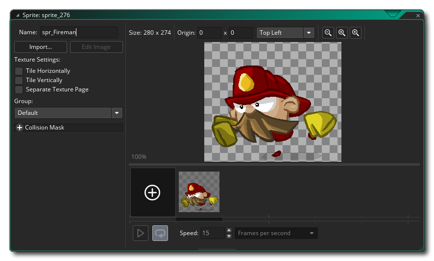

GameMaker Studio 2 bietet Unterstützung für Nicht-Bitmap-Sprites in Form von Vektor-SWF-Dateien oder Spine Skeletal Animation-Dateien. Beide Formate haben ihre Vor- und Nachteile. In den beiden folgenden Abschnitten wird erläutert, wie sie in den Sprite-Editor importiert werden, sowie einige Informationen zu ihrer Darstellung.
GameMaker Studio 2 unterstützt Vektor-Sprites nur begrenzt. Im Allgemeinen verwenden alle Sprites in GameMaker Bitmaps, die zwar inhaltlich flexibel sind, jedoch sowohl der Größe als auch der Anzahl der Frames, die in einem Sprite möglich sind, Beschränkungen auferlegen, bevor die Speicherverwendung untragbar wird. Vektor-Sprites umgehen diese Einschränkungen, indem sie ihren Inhalt unterschiedlich speichern und zeichnen. Statt eines Rasters aus Pixeln, die beim Skalieren blockig oder unscharf werden können, werden sie als Dreiecke gezeichnet, die skalierbar vergrößert werden können, wie in der Abbildung unten dargestellt:
Um Ihnen zu veranschaulichen, wie dies geschieht, ist das folgende Bild aus dem gleichen Vektor Fireman Sprite. Jetzt können wir die Polygone sehen, die zum Erstellen des Bildes in GameMaker Studio 2: 
Beim Programmieren von Spielen ist jedoch nichts umsonst, und bei Vektor-Sprites besteht der Nachteil darin, dass sie teurer als Bitmap-Sprites sind und dieser Geschwindigkeitsunterschied mit zunehmender Komplexität der zu importierenden Animation zunimmt. Im Gegensatz zu Bitmap-Sprites ist auch deren Speicherbedarf durch ihre visuelle Komplexität beeinträchtigt. Aus diesem Grund machen sie es möglich, große animierte Grafiken auf eine Weise hinzuzufügen, die mit herkömmlichen Bitmap-Sprites nicht möglich wäre.
Auf der anderen Seite der Leistungsgleichung können Vektor-Sprites nur die unbedingt benötigten Pixel zeichnen (im Gegensatz zu Bitmap-Sprites, die auch den leeren Raum um das Bild "zeichnen"), können sie aus GPU-Perspektive jedoch günstiger sein. Im Allgemeinen sind Vektor-Sprites auch viel kleiner als ihre Bitmap-Entsprechungen. Für das Feuerwehrmann-Beispiel oberhalb der verschiedenen Sprite-Typen lauten die folgenden:
Bitmap at 70x68 = 4x70x68 bytes x 12 frames = 223k
Vector = 54kWenn Sie die Auflösung des Sprites vervierfachen:
Bitmap at 280x272 = 4x280x272 bytes x 12 frames = 3570k
Vector = 54kWie Sie sehen, kann durch die Verwendung von Vektor-Sprites viel Speicherplatz gespart werden, und wir haben noch viel Potenzial für zukünftige Speicherplatzeinsparungen.
Derzeit kann GameMaker Studio 2 nur Vektorbilder aus Dateien im SWF-Format importieren, und der Import in das Programm ist fast identisch mit dem zum Hinzufügen eines normalen Bitmapbilds. Um ein Vektor-Sprite hinzuzufügen, erstellen Sie ein neues Sprite. Daraufhin wird der Standarddialog zum Laden von Sprite angezeigt. Stellen Sie jedoch sicher, dass Sie im Dateifilter unten die Option *.swf ausgewählt haben.
Durch Klicken auf die Schaltfläche "Laden" wird das Vektorbild oder die Animation zum Ressourcenbaum hinzugefügt. Während der Verarbeitung der Datei wird ein Fortschrittsbalken angezeigt. Beachten Sie, dass dies je nach Komplexität der Datei eine Weile dauern kann (bei komplexeren Animationen bis zu einer Minute). Wenn die Verarbeitung abgeschlossen ist, kehren Sie zum Sprite-Eigenschaftendialogfeld zurück, der jetzt wie folgt aussieht: 
Wie Sie sehen, sieht es wie der normale Sprite-Dialog aus. Das erste Bild der Vektordatei wird rechts im Bildvorschaufenster angezeigt. Es gibt jedoch einige Änderungen gegenüber einem normalen Sprite-Dialog. Erstens ist die Schaltfläche " Sprite bearbeiten" nicht mehr vorhanden, da in dieser Art von Sprite keine Bitmaps zum Bearbeiten vorhanden sind, und zweitens wurde eine neue Schaltfläche " Sprite anzeigen" hinzugefügt. Diese Schaltfläche öffnet die Vektordatei in der jeweiligen Anwendung. Normalerweise ist dies standardmäßig Ihr Webbrowser. Wenn jedoch kein Programm mit der Datei verknüpft ist, geschieht nichts und die Schaltfläche ist deaktiviert. Sie können dies beheben, indem Sie den Windows Explorer öffnen und mit der rechten Maustaste auf eine Vektordatei klicken. dann verwenden Sie " Öffnen mit ", um das Programm auszuwählen, das diesen Dateien zugeordnet werden soll. Sie können auch einen Viewer für diese Sprites im Abschnitt Allgemeine Voreinstellungen - Pfade in GameMaker Studio 2 zuordnen. Mit der Schaltfläche " Sprite anzeigen" wird dieser anstelle des Standard-Viewers geöffnet.
ANMERKUNG: Wie das Bild im ausgewählten Vorschau-Editor aussieht, stimmt nicht mit dem Erscheinungsbild in Ihrem Spiel überein und auch nicht im Vorschaufenster des Sprite-Editors. Das Vektorbild wird in der Größe importiert, in der es erstellt wurde. Dies ist nicht notwendigerweise die Größe, in der die Vorschau angezeigt wird (normalerweise wird das Bild von Browsern skaliert).Sie können auch die Qualität des Vektor-Sprites beim Zeichnen festlegen. Dadurch wird die Anzahl der zum Erzeugen des Sprites verwendeten Dreiecke einfach verringert oder erhöht. Der Standardqualitätswert 50 ist normalerweise für die meisten Spiele ausreichend. Sie sollten jedoch mit diesem Wert experimentieren, wenn Sie extreme Skalierung verwenden oder Leistungsprobleme aufweisen. Ab diesem Punkt sollten die anderen Teile des Editors genauso funktionieren wie für Bitmap-Sprites.
Beim Importieren von Vektor-Sprites sollten Sie eine Reihe von Dingen beachten, wobei das Wichtigste ist, dass einige der Funktionen zum Zeichnen von Sprites und zur Verwaltung von Sprites aus technischen Gründen nicht unterstützt werden, insbesondere bei Zeichnungsfunktionen, die nur einen Teil eines Sprites zeichnen, oder dass die Position in gewisser Weise " schräggestellt" wird ( genaue Informationen hierzu finden Sie in den einzelnen Funktionen der Funktion draw_sprite _ * () ). Die grundlegenden Sprite-Zeichnungsfunktionen werden jedoch vollständig unterstützt, ebenso wie die eingebauten Sprite-Variablen. Sie können auch verschiedene Anti-Aliasing- Werte (AA) für die gezeichneten SWF-Sprites festlegen, indem Sie die folgenden Funktionen verwenden: Zeichnen von Sprites und Kacheln.
Sie sollten auch Folgendes beachten:
- Beim Importieren einer *.SWF-Datei wird Actionscript nicht unterstützt. Wenn Ihre SWF-Datei darauf angewiesen ist, dass sie ordnungsgemäß funktioniert, wird sie wahrscheinlich nicht richtig funktionieren. In ähnlicher Weise wird bei eingebetteten Filmclips, die über eine eigene Zeitleiste verfügen, während der gesamten Animation nur der erste Frame angezeigt. Alle Animationen müssen sich auf der Hauptzeitleiste befinden.
- Wenn Ihre Vektordatei besonders feine Details aufweist, werden gelegentlich Löcher oder seltsame Dreiecke in den resultierenden Sprites angezeigt. Dies liegt daran, dass Geometrie bei kleinen Skalen manchmal zusammenfallen kann, um Formen zu erzeugen, die einfach nicht gut triangulieren. In diesem Fall haben Sie zwei Möglichkeiten: Sie können den Inhalt der Vektordatei vergrößern, um dem Importer mehr Spielraum zu geben, oder Sie können versuchen, die Detailgenauigkeit des Objekts, das beschädigt wird, zu reduzieren.
- GameMaker Studio 2 verwendet die Bühnengröße der SWF-Datei als Begrenzung für das resultierende Sprite. Wenn Sie jedoch etwas außerhalb dieser Grenzen auf der Bühne haben, wird es immer noch gezeichnet. Dies bedeutet, dass Sie entweder versuchen sollten, etwas außerhalb Ihrer Bühnengrenzen zu platzieren, wenn Sie nicht möchten, dass es angezeigt wird, oder eine Maskenebene verwenden, um das Zeichnen auf diesen Bereich zu beschränken.
- Die Bühnengröße wirkt sich auch auf die Größe der erzeugten Kollisionsmasken aus. Wenn Sie also eine große Bühnengröße und viele Frames in Ihrer Animation haben, können Sie möglicherweise viel Speicherplatz beanspruchen. Verwenden Sie daher nur präzise Kollisionsmasken, wenn Sie sie wirklich benötigen.
- Da eine SWF-Datei aus mehreren Ebenen erstellt wird, von denen sich einige möglicherweise überlappen, funktioniert Alpha nicht so, wie dies bei Bitmap-Sprites der Fall ist. Überlappende Bereiche wirken nicht so transparent wie andere Teile des Sprites, da die Pixel vorhanden sind mehrfach gezeichnet.
- Bitmap-Füllungen werden zwar unterstützt, wenn Sie gekachelte Bitmap-Füllungen als Teil Ihrer SWF-Datei verwenden, müssen Sie sicherstellen, dass die Bitmap eine Zweierpotenz hat. Andernfalls wird die Kacheln nicht ordnungsgemäß kacheln. Text-Rendering wird ebenfalls unterstützt, Sie müssen jedoch die Schriftart in Ihre SWF-Datei einbetten, damit sie im resultierenden Sprite angezeigt wird. Derzeit wird nur einzeiliger Text mit Linksausrichtung unterstützt.
Ein mit Skelettanimation erstelltes Sprite ist ein Sprite, bei dem ein Basis- "Skelett" erstellt und mit Keyframes animiert wurde, um die Komponententeile des Skeletts mit der Zeit zu verschieben. Dieses Skelett wird dann von einem Texturatlas gehäutet und die resultierende Animation in einen von vielen Dateitypen exportiert. Gamemaker: Studio erlaubt es Ihnen, diesen Sprite-Typ zu importieren, solange er als exportiert wurde *.json formatieren und hat die korrekt zugeordnete Texturatlasdatei ( *.atlas ) und Bilddatei (als *.png ) im selben Verzeichnis.
WICHTIG: GameMaker Studio 2 unterstützt nur einen einzelnen Texturatlas pro Sprite.HINWEIS: Diese Funktion unterstützt derzeit nur Dateien, die mit dem Programm Spine erstellt wurden.Derzeit kann GameMaker Studio 2 nur Vektorbilder aus Dateien des JSON-Formats importieren, die mit dem Programm Spine erstellt wurden. Die Art, wie sie in das Programm importiert werden, ist jedoch fast identisch mit der zum Hinzufügen eines normalen Bitmapbilds. Um eine Skelettanimation hinzuzufügen, müssen Sie ein neues Sprite erstellen. Daraufhin wird das Standarddialogfeld "Load Sprite" angezeigt. Stellen Sie jedoch sicher, dass Sie es ausgewählt haben *.json aus dem Dateifilter unten.
Wenn Sie auf die Schaltfläche "Laden" klicken, wird die Skelettanimation als Sprite zum Ressourcenbaum hinzugefügt. Eine Fortschrittsleiste wird angezeigt, während die Datei verarbeitet wird. Beachten Sie, dass dies je nach Komplexität der Datei einige Zeit dauern kann. Wenn die Verarbeitung abgeschlossen ist, kehren Sie zum Sprite-Eigenschaftendialogfeld zurück, der jetzt wie folgt aussieht:
Nachdem Sie die Animation importiert haben, können Sie die Kollisionseigenschaften festlegen. Beachten Sie jedoch, dass Sie hier nur die Verwendung präziser Kollisionen oder Bounding-Box-Kollisionen beschränken und dass die Kollisionsdaten für eine Skelettanimation explizit aus den bereitgestellten Daten stammen. GameMaker Studio 2 generiert keine Kollisionsmaske, wenn die Daten in der importierten Datei fehlen. Dies bedeutet, dass Sie keine Arbeitskollisionen erhalten, wenn die Masken nicht korrekt in dem Programm festgelegt sind, mit dem das importierte Bild erstellt wird.
HINWEIS: Aufgrund der Komplexität von Skelettanimationen soll das im Sprite-Editor angezeigte Vorschaubild nicht genau Ihre Animation darstellen, sondern Sie erhalten ein einfaches Bild, das die Animation für die Visualisierung im Raumeditor darstellt.Im Gegensatz zu Bitmap-Sprites kann das importierte Skelett-Animations-Sprite auf keine Weise im Editor geändert werden. In GameMaker Language (GML) stehen jedoch eine Reihe von Funktionen zur Verfügung, mit denen Sie Skins ändern, Eigenschaften festlegen und andere Aspekte von steuern können die Animation.
Es gibt einige Dinge, die Sie beim Importieren von Animationssprites für Skeletts beachten sollten. Das wichtigste ist jedoch, dass einige der Funktionen zum Zeichnen von Sprites und zum Verwalten von Sprites aus technischen Gründen nicht unterstützt werden, insbesondere bei Zeichnungsfunktionen, die nur einen Teil eines Zeichners zeichnen Sprite, oder dass die Position in irgendeiner Weise "schräggestellt" wird (die einzelnen Funktionen der Funktion draw_sprite _ * () finden Sie hier ). Die grundlegenden Sprite-Zeichnungsfunktionen werden jedoch vollständig unterstützt, ebenso wie die eingebauten Sprite-Variablen. Neben diesen Funktionen und Variablen können Sie die Animationseigenschaften auch mit special einstellen und ändern skeleton_* Funktionen, die im Referenzabschnitt über Skelettanimationen aufgeführt und erläutert werden.